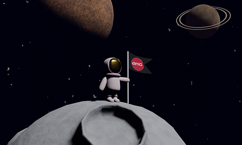

3D Spaceman
Blender gebruiken voor 3D assets
Opdracht:
Maak een 3D model waar meerdere Blender technieken worden gebruikt.
Focus:
Blender, 3D Modeling
Proces:
Gebruik gemaakt van technieken die ik tijdens mijn Minor Game Design heb geleerd om 3D assets te maken.
Reflectie
3D is niet alleen interessant voor games. Ik denk dat de toekomst van het internet bijna volledig 3D zal zijn door VR en dergelijke. Hierdoor denk ik dat kennis van 3D ook nuttig zal zijn voor "normale" digitale applicaties. Dit project was leuk en ziet er aardig uit, ik ben geen 3D kunstenaar maar ik weet nu wel hoe je een aantal dingen kan maken in Blender.